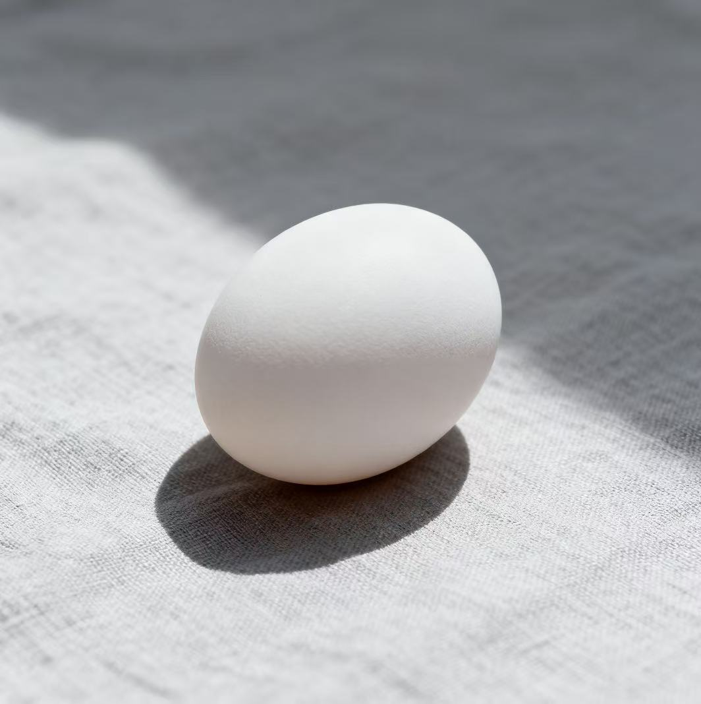

蛋炒饭首选新鲜度高的土鸡蛋，蛋黄颜色深、蛋香味浓，炒出来的米饭色泽更金黄诱人。蛋炒饭的鸡蛋想要嫩滑不结块，核心是热锅冷油滑炒，蛋液微凝就盛出，最后和米饭同炒即可。
1.鸡蛋加少许盐/白胡椒打散，可滴 1-2 滴清水/料酒增嫩；
2.炒锅烧至冒烟倒食用油，倒入蛋液，用筷子快速划散；
3.待鸡蛋呈半凝固的絮状（约七八成熟）,立刻盛出备用,后续和炒好的米饭混合翻炒 10 秒就行。
ChenZhe QingRensjna 2026.1.23